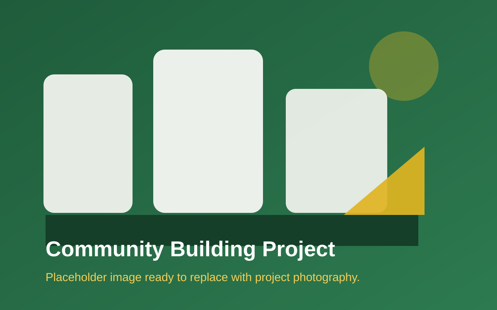

Community Building
Neighborhood Revitalization Initiative
Coordinated stakeholder planning sessions and project roadmapping for a multi-phase effort to improve shared public spaces and community programming.
Outcome: Created a unified action plan with clear milestones, partner roles, and funding priorities.